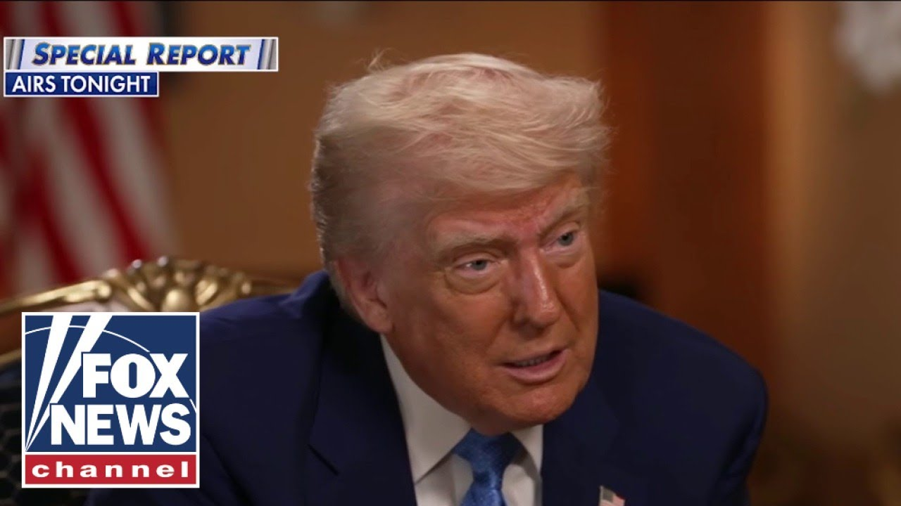

【特朗普回应科米的“86 47”信息：“他完全清楚其含义”】
Summary: Former FBI director James Comey's Instagram post with "8647" sparked outrage, with many interpreting it as a call for violence against the president. Comey denied intent, removed the post, and condemned violence, but Trump and others accused him of knowingly inciting assassination.
摘要： 前联邦调查局局长詹姆斯·科米在Instagram上发布“8647”引发众怒，许多人认为这是对总统的暴力呼吁。科米否认意图并删除帖子，但特朗普等人指责他蓄意煽动刺杀。

⏱️ Estimated Reading Time: 6 min
All right.
好吧。
Okay.
好的。
This story, it's sparking a wave of anger.
这则新闻引发了愤怒浪潮。
James Comey, our former FBI director, posted on Instagram something that many are many are interpreting as a call for violence on the president.
前联邦调查局局长詹姆斯·科米在Instagram上发布的内容被许多人解读为对总统的暴力呼吁。
Look at this.
看看这个。
The caption reads, "Cool shell formation on my beachwalk."
配文写道：“海滩漫步时看到的酷炫贝壳排列。”
And it says 8647.
还写着8647。
So, this is what the former director is saying in response to this.
以下是这位前局长对此的回应。
It literally makes no sense, but here it is.
这完全说不通，但就是这样。
I posted earlier a picture of some shells.
我之前发布了一张贝壳的照片。
I saw today on a beachwalk, which I assume were a political message.
今天在海滩漫步时看到的，我以为是政治信息。
I didn't realize some folks associated those numbers with violence.
我没意识到有人将这些数字与暴力联系起来。
It's never occurred to me, but I oppose violence of any kind, so I took the post down.
我从未想过，但我反对任何形式的暴力，所以删除了帖子。
So, what political message did you think it represented?
那么，你认为它代表什么政治信息？
Just in case you don't know, most people do.
以防你不知道，大多数人都知道。
In the dictionary, it it defines 86 as slang for to throw out, to get rid of, and to refuse service to.
词典中将86定义为俚语，意为扔掉、清除或拒绝服务。
A lot of restaurants use this.
许多餐厅使用这个词。
When I was a waitress, they would put 86 green beans on the chalkboard.
我当服务员时，他们会在黑板上写“86青豆”。
So, you knew we were out of it.
这样你就知道卖完了。
But, but when it comes to law enforcement, a lot of times 86 means death.
但在执法领域，86常意味着死亡。
They kill him by 86 to he's dead.
用86表示他被杀了。
So, we thought the head of the FBI has to know what 86 can be used.
所以我们认为联邦调查局局长肯定知道86的含义。
Why would you post that?
你为什么要发这个？
Number one, who cares what James Comey thinks.
首先，谁在乎詹姆斯·科米的想法。
All he spends his time on the beach.
他整天泡在海滩上。
I'm wondering, did he do that rock for me, too?
我在想，他摆那个石头也是为了我吗？
Or do you think he just walked on and thought you'd share it?
还是你觉得他只是路过并想分享？
So, this this caused Don Jr. stumbled on it first and said, "Are you calling for the assassination of my dad?"
小唐纳德最先发现并质问：“你在呼吁刺杀我父亲吗？”
Yeah.
是的。
So, here's the president ask responding to it.
以下是总统的回应。
He knew exactly what that meant.
他完全清楚那是什么意思。
A child knows what that meant.
连小孩都知道那是什么意思。
If you're the FBI director and you don't know what that meant, that meant assassination.
如果你是联邦调查局局长却不知道，那意味着刺杀。
And it says it loud and clear.
而且说得明明白白。
Now, he wasn't very competent, but he was competent enough to know what that meant.
他能力不怎么样，但足以明白那含义。
And he did it for a reason.
他这么做是有原因的。
and he was hit so hard because people like me and they like what's happening with our country.
他受到猛烈抨击是因为人们喜欢我，喜欢我们国家的现状。
Our country's become respected again and all this and he's calling for the assassination of the president.
我们的国家重新受到尊重，而他却呼吁刺杀总统。
Obviously, he apologized and said he doesn't want to for violence.
显然，他道歉并称反对暴力。
But look, he's a very big What do you want to see happen?
但听着，他是个大人物。你想看到什么结果？
What do you want to see happen?
你想看到什么结果？
Uh I don't want to take a position on it because that's going to be up to Pam and all of the great people.
呃，我不想表态，因为这取决于帕姆和其他优秀的人。
But I will say this, I think it's a terrible thing.
但我要说，这很糟糕。
And when you add his history to that, if he had a clean history, he doesn't.
结合他的历史，如果他历史清白——但他没有。
He's a dirty cup.
他是个脏杯子。
He's a dirty cop.
他是个肮脏的警察。
And if he had a clean history, I could I could understand if there was a leniency, but I'm going to let them make that decision.
如果他历史清白，我还能理解宽大处理，但我会让他们决定。
Chelsea Gabbert was asked, "Do you believe that Comey should be in jail?"
有人问切尔西·加伯特：“你认为科米该坐牢吗？”
She said, "I do.
她说：“是的。”
any other person with a position of truth that has people who take him very seriously what a guy of that stature his experience and with propaganda media has built him up him up to be she's very concerned so secret service is now dispatched to investigate and Don Jr said just James Comey casually calling for my dad to be murdered this is who the dim media worships demented we've already had two attempted assassination attempts on the on the the president why would you put that out there and playing stupid is not going to get you anywhere where I look forward to the investigation.
任何其他身居要职的人都会被严肃对待，像他这样地位和经验的人，加上宣传媒体的吹捧，她非常担忧。特勤局已展开调查。小唐纳德说：“詹姆斯·科米随意呼吁谋杀我父亲，这就是昏庸媒体崇拜的疯子。总统已遭遇两次刺杀未遂，你为什么要发这个？装傻没用，我期待调查。”
I'm Steve Ducey.
我是史蒂夫·杜西。
I'm Brian Kilme.
我是布莱恩·基尔梅。
And I'm Anley Airheart.
我是安利·埃尔哈特。
And click here to subscribe to the Fox News YouTube page to catch our hottest interviews and most compelling analysis.
点击此处订阅福克斯新闻YouTube频道，获取最热访谈和犀利分析。